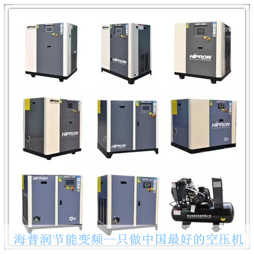

智能与节能并存
文章出处：螺旋钢管发布员 人气：发表时间：2015-08-31 13:02
随着我国工业生产与环保体系建立越来越紧密的合作关系，行业也逐渐看到了节能降耗的巨大价值，近期国家推出了空气压缩机的新国标，使环保产业与工业生产的需求更快的结合到一起。智能与节能是多么熟悉的字眼，在我们生活中处处提倡节能环保，环境保护与节能减排已经成为刻不容缓的任务，如今考虑是如何才能更智能更节能。海普润空压机创业之初便投身于智能节能环保事业，由海普润研发制造稀土永磁变频空压机，通过最新的设计与改造，实现了海普润空压机的智能、高效、节能、低噪。
海普润空压机在选型及设计方面有无与伦比的优势，单是节能就比普通空压机节省50%的电，使用寿命比普通空压机寿命长达5-10年，由于设计特点，海普润空压机改变传统空压机的很多细节，使产品更加人性化、智能化。

通过客户多年的使用效果，海普润空压机得到了各企业的高度评价及肯定。海普润空压机凭着“科技创新、以质取胜”的企业精神，致力发展成为中国空压机领域最有影响力的智能型节能空压机品牌之一。
下一篇：筑质量大堤，迎世纪挑战 上一篇：没有了
此文关键字：智能,与,节能,并存,随着,我国,工业生产,与,
推荐产品


相关产品
相关推荐
- 天津螺旋管厂-节能减排效力显现
- 螺旋钢管价格|螺旋焊管管端扩径与直缝焊管扩径
- 螺旋焊管与直缝焊管的价格分析
- 螺旋钢管价格螺旋钢管型号与装车数量
- 螺旋钢管与直缝钢管的冶金性能对比分析
- 螺旋管厂与钢贸商的博弈会如何展开
- 螺旋钢管当前售价与成本明显倒挂
- 天津25号最新螺旋钢管规格与理论重量表
- 焊接钢管与焊接螺旋钢管的区别在哪里
- 螺旋管厂螺旋钢管的壁厚标准与价格行情
- 螺旋钢管与直缝焊管技术特性比较
- 天津市万盛华业螺旋钢管型号与装车数量
- 螺旋钢管与普通管的不同处
- 原材料与螺旋钢管价格的双向传导机制能否顺畅
- 螺旋钢管价格行情 螺旋钢管与直缝钢管的比
- 20号厚壁螺旋钢管碳素结构钢板与标准
- 螺旋钢管与无缝钢管的性能测试结果是什么
- 螺旋钢管与螺旋管生产工艺区别在哪里
- 螺旋钢管碳素结构钢板价格与标准的介绍
- 大口径螺旋钢管污染与雾霾源头如影随形
- 厚壁1.2寸螺旋钢管与管桩的关系
- 厚壁螺旋钢管碳素结构钢板与标准简单介绍
- 青岛螺杆空压机哪家好?
- 节能效果又获客户芳心!
- 永磁变频空压机——绿色节能先锋（最高省电7
- 精益求精，只为节能-—青岛空压机的核心竟争力
- 舞动节能的脚步
随机推荐
- 螺旋钢管价格Q345B方管执行国家标准
- 巴中石油裂化用壁厚30的GB/T3640-88石油天然气输送
- 螺旋钢管经销商将进一步重建库存
- 螺旋钢管价格|防腐螺旋钢管执行标准
- 2013螺旋钢管钢市有“鸿运当头”开局预兆
- 我国螺旋钢管厂两极分化的原因分析？
- 天津万盛提供720*6-8螺旋管最新价格
- 螺旋钢管正确的存放方法
- 河池汽车半轴套管用351*25的GB/T12770-2002碳钢螺旋钢
- Q235B螺旋管及其标准分类|螺旋管材质
- 连云港1月17日中钢联产外径325的Q235A直缝螺旋钢管
- 螺旋焊管出产尺度的法定，螺旋焊缝钢管的重要
- 西宁善于专门加工制造X46大口径螺旋钢管理论重
- 湖南螺旋管厂产品的价格最近涨幅不稳定
- 30日沧州Q235大口径螺旋焊管报价
- 石油专用螺旋钢管用途和类别
- 钢结构厚壁螺旋钢管的优点有那几条
- 螺旋钢管价格表 天津市场螺旋焊管市场行情
- 需求情况不容乐观，螺旋钢管价格市场或难有逆
- 中钢联产325*16的GB/T14291-2006打桩螺旋钢管一根多少
- 宜蘭縣螺旋钢管标准 宜蘭縣螺旋埋弧焊钢管 宜蘭
- 11月16日燃气用保温螺旋钢管平稳运行、成交欠佳
- 昨日各地区螺旋钢管价格最新行情
- 螺旋钢管，螺旋焊接钢管焊接区的常见缺陷有哪
- 节前螺旋钢管价格涨幅过大，节后明显回调
- 美国进口的清除内毛刺和冷缩径工艺设备
- 北京螺旋管厂家信息-Q345b螺旋管规格表
- 唐山液压支柱用1Cr18Ni9地质钻探螺旋钢管今日价格
- 高温天气增多，螺旋钢管价格需求继续减弱
- 吉林退火外径273的SY5040-83内外埋弧焊螺旋钢管规
重点推荐
- 螺旋管厂在制作螺旋焊管过程中,需要主意的问题
- 波段和趋势共振对螺旋钢管价格有不可预计的推
- 广东Q345b螺旋管 广东X42螺旋管 广东16锰螺旋钢管
- 天津螺旋钢管市场价格小幅下降20元
- 不同板厚及不同环境温度下16Mn钢的预热温度
- 螺旋管厂、螺旋钢管价格交货技术条件
- 沈阳购买螺旋钢管 沈阳螺旋钢管生产工艺 沈阳螺
- 云南螺旋钢管图片 云南排水用螺旋钢管 云南螺旋
- 安庆购买螺旋钢管 安庆螺旋钢管生产工艺 安庆螺
- 天津螺旋管厂-节能减排效力显现
- 南昌生产钢管 南昌钢管壁厚标准 南昌钢
- 外贸16锰钢管 外贸Q235A螺 外贸L245钢管
- 大庆Q235A螺旋管 大庆q345c螺旋钢管 大庆Q345b螺旋管
- Q235B螺旋管生产工艺Q235B螺旋管的特点
- 螺旋钢管按用途分为
- 成都保温螺旋钢管 成都16锰螺旋钢管 成都
- 螺旋管的外径,内径,相邻螺旋间距约为多少算标准
- 黄冈GB/T9711螺旋管 黄冈螺旋钢管市场 黄冈l360螺旋
- 什么是螺旋缝钢管|Q235螺旋钢管工艺流程
- “2012世界末日”之后能否也让螺旋钢管劫难重生